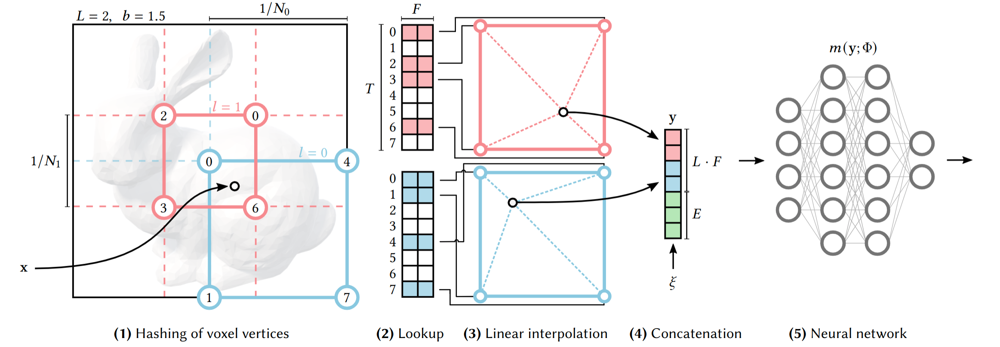
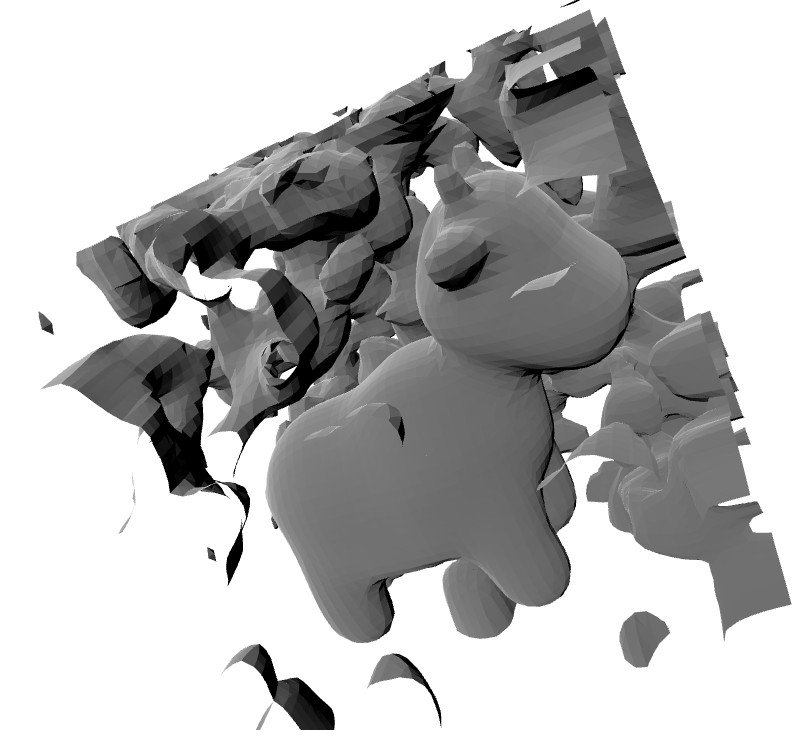

Neural Signed Distance Functions From Point Clouds
Project by Niklas Schmitz (schmitz@tu-berlin.de)
Signed distance functions (SDFs) are implicit representations of geometry, with nice mathematical and algorithmic properties such as efficient intersection testing. This often makes them a useful alternative to explicit mesh-based geometry representations, with applications ranging from graphics to computer-aided design and beyond. Neural signed distance functions (NSDFs) employ methods from neural networks and gradient-based optimization to fit flexible signed distance function representations to raw data such as point clouds.
In this project, we explore novel combinations of two recent works on NSDFs: The first being "Implicit Geometric Regularization for Learning Shapes" by Gropp et al. [1], and the second "Instant Neural Graphics Primitives with a Multiresolution Hash Encoding" by Müller et al. [2]. The goal is to benefit from multiresolution representations when fitting NSDFs to raw but highly detailed point clouds. The combination of the two is achieved by adapting the general approach from "Geometry-Consistent Neural Shape Representation with Implicit Displacement Fields" by Yifan et al. [3].
Task
The signed distance function \(f: \mathbb{R}^3 \to \mathbb{R}\) of a closed volume \(\mathcal{M}\subset\mathbb{R}^3\) is defined as \[ f(x) = \begin{cases} -\textrm{dist}(x, \partial \mathcal M),\quad x\in \mathcal M\\ +\textrm{dist}(x, \partial \mathcal M),\quad x\notin \mathcal M \end{cases}. \] The boundary surface is thus represented implicitly and can be recovered from \(f\) as its zero-level set as \[ \partial \mathcal{M} = \{x \in \mathbb{R}^3 \,|\, f(x)=0\}. \]
Example Signed Distance Function
The SDF of a sphere is \(f(x)=||x||-1\), which in 2D gives the circle.
Methods
Implicit Geometric Regularization
For the surface reconstruction task, Gropp et al.[1] introduced a loss of the form \[ \mathcal{L}(\theta) = \frac{1}{|I|}\sum_{i \in I} (|f(x_i; \theta)| + \tau ||\nabla_x f(x_i; \theta) - n_i||) + \lambda \mathbb{E}_x(||\nabla_x f(x; \theta)|| - 1)^2, \] where \(\tau\) and \(\lambda\) are hyperparameters with defaults 1.0 and 0.1, respectively. The first two terms encourage the function to vanish on the given surface points and align its gradient to reproduce the given normals. The last term is called the Eikonal term, encouraging unit-norm gradients throughout ambient space. It is named in analogy to the Eikonal partial differential equation \[ ||\nabla f(x)|| = 1. \] The expectation is taken with respect to a probability density \(x\sim \mathcal{D}\) detailed in [1], sampling partly close around each surface point and partly from the ambient unit cube.
Multiresolution Hash Encoding
Instead of directly feeding inputs \(x\in\mathbb{R}^3\) into a fully connected neural network, Müller et al.[2] proposed a learnable hashing-based multiresolution input encoding \(y = \textrm{enc}(x; \theta_{\textrm{enc}})\) to efficiently adapt to fine detailed geometry at multiple scales.
Multiresolution Hash Encoding Architecture
Illustration of the multiresolution hash encoding in 2D. Figure 3 from Müller et al.[2]
Implicit Displacement Fields
Taking inspiration from classical displacement mapping techniques from graphics, Yifan et al.[3] proposed a particular composition scheme of network architectures from a low-frequent base network \(N_B(x)\) and a high-frequent displacement network \(N_D(x)\). The signed distance is then computed in two steps: \[ f(x) = N_B(x), \quad \hat{f}(x) = N_B\bigg(x + \chi\big(f(x)\big) N_D(x) \frac{\nabla f(x)}{||\nabla f(x)||} \bigg) \] This form allows for small local displacements of the query points along the normal direction, adding detail to a possibly pretrained coarse base network. The attenuation function \(\chi(f(x))=\frac{1}{1 + (f(x) / \nu)^4}\) suppresses the contribution of \(N_D\) when far from the surface, with the hyperparameter \(\nu\) controlling the speed of attenuation. This is to reduce room for high-frequent artefacts in data-sparse regions.
Implicit Displacement Field
Illustration of an implicit displacement field in 1D. Figure 3 from Yifan et al.[3]
Implementation
We use JAX with Treex, skimage marching cubes, trimesh. We follow the convention of rescaling input data to work in the unit cube [0,1]^3.
Full Code Available
https://github.com/niklasschmitz/sdf_jaxExperiments
2D shape reconstruction with IGR
We start with a simple toy example of a small synthetic point cloud in 2D.
We use the IGR loss function, but omitting normals.
As a model we use the IGRModel, which reimplements the 7-layer MLP with
a skip-connection to the fourth layer described in and used
throughout by Gropp et al. in [1]. The Adam optimizer is used
with a step size of 5e-3 for \(1000\) steps, which here takes less than a second.
The full code for this first example is available as
geometric_regularization.ipynb.
The resulting reconstruction is visualized below. Visually, we observe a plausible fit of the points by the zero levelset as a closed curve forming a cross. Looking at the reconstructed SDF on the right, we observe the desired approximately even spacing of contour lines.
Toy example of applying IGR to a small point cloud in 2D.
3D shape reconstruction with IGR
Here we start with the simple 3D point cloud from the introduction, consisting of
\(\sim 4000\) vertices. Additionally, we include approximate vertex normals
computed from unweighted triangle normal averages. We again fit an IGRModel as described above,
now with \(300\) steps and a batch size of \(1024\). The result is shown in the second panel below, visually
indicating an adequate fit. Now we replace the model by a Hash Encoding. The encoding is followed by a simple
MLP with two hidden layers of width \(64\) and softplus activations, and fit using the same procedure.
The result is shown in the third panel below.
The key visual observation of this experiment are the ambient artefacts of the Hash Encoding MLP off the surface, which are most likely left-overs from the random initialization and are difficult to smoothen out during training being far from the data and spatially de-correlated. This hints at the fact that we need a more refined approach, if we want to benefit from multiresolution detail for our point cloud task.
Input

The input point cloud in 3D.
IGRModel
Reconstructed surface by the IGRModel.
Hash Encoding MLP
Reconstructed surface by an MLP with Hash Encoding, showing characteristic artifacts in ambient space.
3D shape reconstruction with Implicit Displacement Fields, IGR and Hash Encoding
We now turn to more detailed examples from the sdf-explorer dataset from Takikawa et al.[4], containing positions and normals of sampled surfaces, generated from synthetic ground-truth signed distance functions.
Next to the default IGRModel configuration with width \(512\) under the name "igr",
we also try out two novel variants of combining the IGR model as base model
with the Hash Encoding MLP as displacement model together forming
and Implicit Displacement Field IDFModel
(using the default attenuation speed \(\nu=0.04\)).
The two IDF-based models differ in their training procedure:
"idf" jointly fits both the base and the displacement
networks; idf-pretrain" first fits
the base IGRModel alone for half of the optimization steps,
then freezes its weights and combines it in a IDFModel with a
new displacement model, training for the remaining half of the optimization duration.
We fit all three models using the default IGR loss on positions and normals, using the Adam optimizer for \(20000\) steps with step size \(0.0001\) and a batch size of \(128^2\). Validation losses are evaluated on \(128^2\) points chosen uniformly at random and excluded from the training set, and are tabulated below.
Point Cloud Benchmark Results
| Dataset | Model | Surface loss | Normal loss | Eikonal loss |
|---|---|---|---|---|
| Dalek | "igr" | 0.00117 | 0.06390 | 0.09611 |
| Dalek | "idf" | 0.00042 | 0.08637 | 0.02494 |
| Dalek | "idf-pretrain" | 0.00070 | 0.07742 | 0.02395 |
"igr"
Reconstruction using the "igr" config.
"idf"
Reconstruction using the "idf" config.
"idf-pretrain"
Reconstruction using the "idf-pretrain" config.
We observe an overall smooth fit of the "igr" configuration but lacking a bit of detail on and above the arms. The "idf" approach with joint training, while having the lowest validation surface loss, is plagued visibly by ambient artifacts. The "idf-pretrain" approach looks much more stable, closer to "igr" while still exhibiting a few small artefacts but also a bit more detail on and above the arms.
The full code for reproducing this benchmark experiment can be found in benchmark_pointclouds.py .
Conclusion
We have implemented three independent methods from the current research on neural implicit representation with a focus on SDF and shape construction from 3D point cloud.
The IGR loss is showing promise as providing a general framework for the 3D reconstruction task,
where we could seamlessly switch neural architectures.
The multi-layer perceptron IGRModel has shown to be rather robust on the examples,
but lacked high-frequent detail and rather oversmoothed the surfaces as could be expected.
The Multiresolution Hash Encoding was efficient to implement and fit, and could capture some of the finer high-frequent detail but for our task at the cost of being prone to producing many artefacts in the ambient space. This makes sense due to the strongly decorrelating nature of the higher-frequent levels of the input encoding, making it difficult to smoothen out left-over artefacts from initialization far from the surface by an Eikonal term in limited time.
The IDF Model is a promising approach for future research into combining the strengths of the two approaches. While the direct joint training of base and displacement networks still led to considerable artefacts, the pretraining approach seemed much more stable and managed to add a little more detail to the surface.
References
- [1] Gropp, Amos and Yariv, Lior and Haim, Niv and Atzmon, Matan and Lipman, Yaron. "Implicit Geometric Regularization for Learning Shapes", 37th International Conference on Machine Learning (ICML), July 2020.
- [2] Müller, Thomas and Evans, Alex and Schied, Christoph and Keller, Alexander. "Instant Neural Graphics Primitives with a Multiresolution Hash Encoding", ACM Transactions on Graphics (SIGGRAPH), July 2022.
- [3] Yifan, Wang and Rahmann, Lukas and Sorkine-Hornung, Olga. "Geometry-Consistent Neural Shape Representation with Implicit Displacement Fields", 10th International Conference on Learning Representations (ICLR), April 2022.
- [4] Takikawa, Towaki and Glassner, Andrew and McGuire, Morgan. "A Dataset and Explorer for 3D Signed Distance Functions", Journal of Computer Graphics Techniques (JCGT), April 2022.